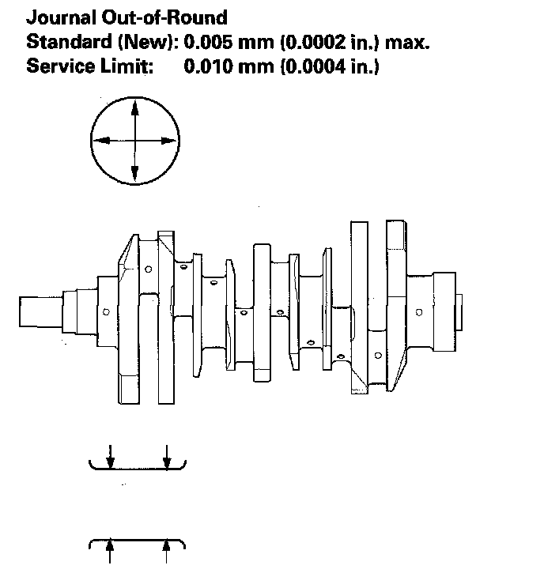
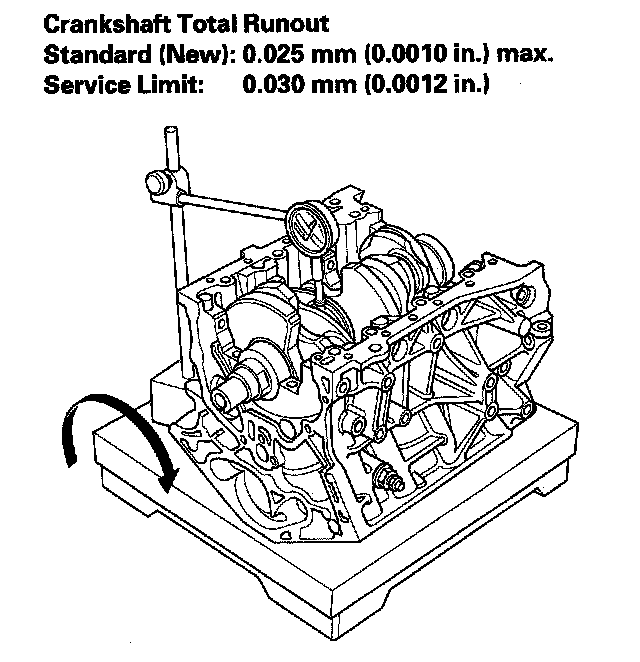

Crankshaft Inspection
Crankshaft InspectionOut-of-Round and Taper
1. Remove the crankshaft from the engine block.
2. Clean the crankshaft oil passages with pipe cleaners or a suitable brush.
3. Check the keyway and threads.
4. Measure out-of-round at the middle of each rod and main journal in two places. The difference between measurements on each journal must not be more than the service limit.

5. Measure taper at the edges of each rod and main journal. The difference between measurements on each journal must not be more than the service limit.
Journal Taper
Standard (New): 0.005 mm (0.0002 in.) max.
Service Limit: 0.010 mm (0.0004 in.)
Straightness
6. Place the engine block on the surface plate.
7. Clean and install the bearings on the No. 1 and No. 4 journal of the engine block.
8. Lower the crankshaft into the engine block.
9. Measure the runout on all of the main journals. Rotate the crankshaft two complete revolutions. The difference between measurements on each journal must not be more than the service limit.
